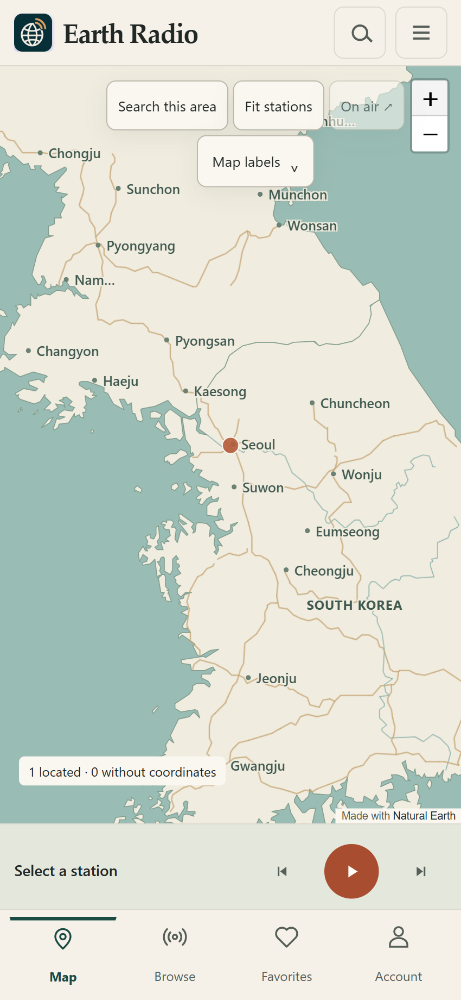
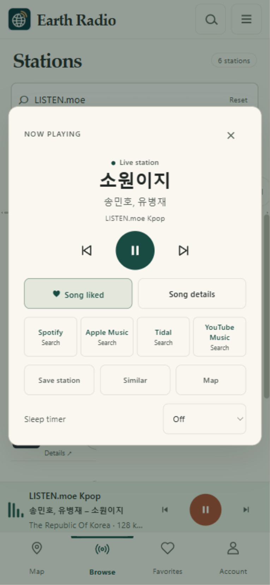

Start with a place.
Country and city labels help you explore. Search the area on the map or find a station by name, genre, or language.
Live radio. A world to explore.
Find a station somewhere new.
Keep the songs that stay with you.
No account needed to listen.
01 / Tune into a place
Move across the map, zoom into a city, or search for the sound you have in mind. Earth Radio brings the station and its place together.
Country and city labels help you explore. Search the area on the map or find a station by name, genre, or language.
A compact player keeps the song and station in view. Save stations, find something similar, or set a sleep timer.
Like a song or revisit Recently heard. When artist and title are available, follow track or search links to Spotify, Apple Music, Tidal, and YouTube Music.

The listening atlas, around Seoul.
Bundled Natural Earth map data.
02 / Inside Earth Radio
Station favorites and liked songs have their own place. Sign in with Google, GitHub, or email to keep your collection in sync across the web and desktop apps.
Stations share different amounts of song information. Earth Radio shows what is available and labels searches clearly.

03 / Make room for radio
The browser is ready when you are.
Install an app if you would like radio to have its own window.
For ARM-based Windows PCs.
For Intel and AMD Windows PCs.
Choose the processor shown in About This Mac.
Install the web app from Safari.
Windows builds use a local signing certificate. The macOS builds are unnotarized. Read the installation guide for the operating-system prompts and tested scope.
04 / A few useful things
Install from the app address above so the shortcut opens the radio app.
No. You can explore and listen without signing in. An account keeps your saved stations, likes, and optional song history in sync. You can turn song history off or clear it from Account.
Sign in again at the new app address to load your synced account collection. Browser-local data stays at the earlier app address. Open it to sync or export any unsynced favorites and songs before switching. Existing Home Screen shortcuts can keep using that address.
Stations run their own streams. Availability, formats, regional restrictions, and the metadata they share can vary. Some songs have a verified catalog link; others have clearly labeled service searches.